PHOTOSHOOT GUIDELINES / CREATIVE DIRECTION
VISUAL LANGUAGE
Warm
Composed
Natural
Soft
Minimal
Rooted
Feminine
Intentional
FASHION BRAND
Quiet
Editorial
Refined
NOT A BRAND, A LIFESTYLE
Calm
Elegant
Tactile
Emotionally refined
A Saudi fashion house with a viewpoint
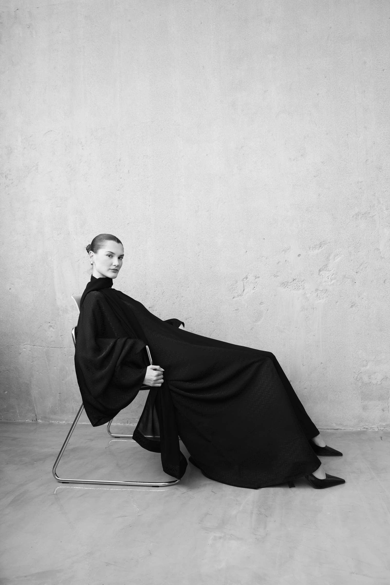
OVERVIEW
Tre Sorelle es una casa de modestwear nacida en Riyadh. Desde el inicio asumí la totalidad de su universo creativo: construí la identidad, definí el lenguaje de marca y dirigí cómo esa visión debía transformarse en producto, campaña y comunicación.
Trabajo junto a sus fundadoras como directora creativa y responsable del diseño de la marca. Cada decisión visual —del logo a un reel diario— responde a una misma estrategia: crear una identidad saudí con raíces locales y proyección internacional.
01
El proyecto comenzó con la creación del logo, el isotipo, la selección tipográfica, la paleta y la curaduría del mundo visual. Construí un sistema sereno y preciso, donde tres líneas se encuentran para representar a las tres hermanas y dar origen a una marca reconocible incluso sin mostrar una prenda.
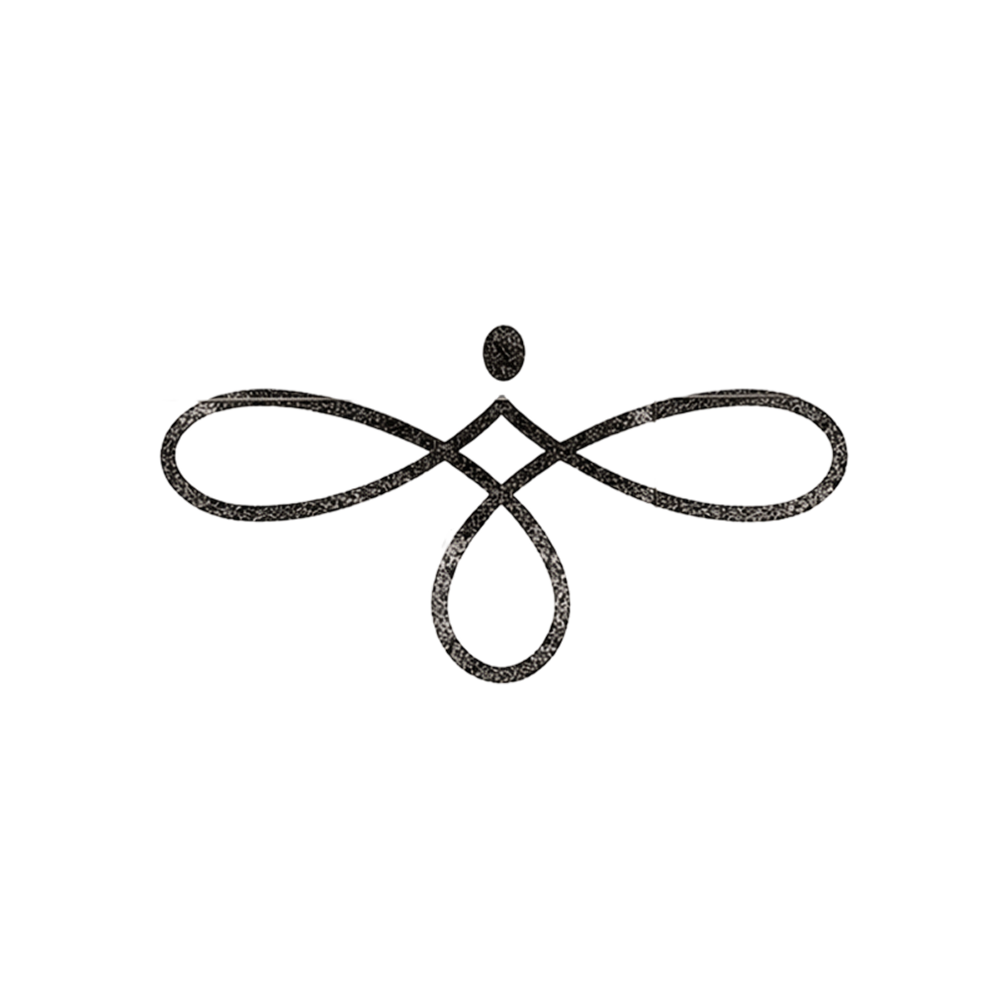
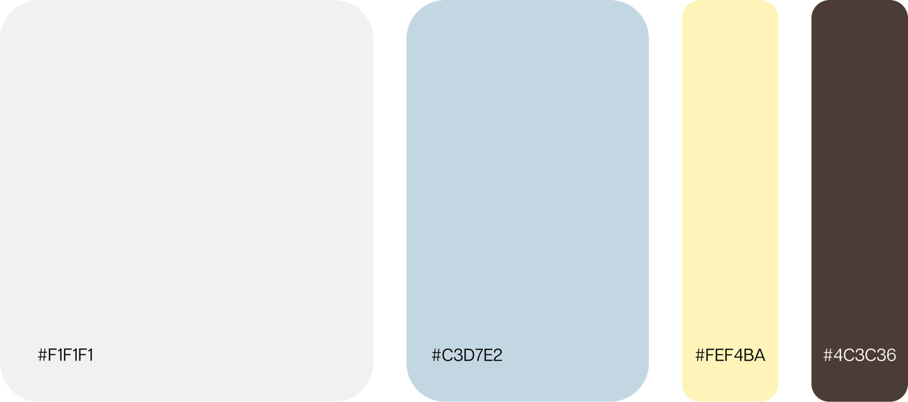
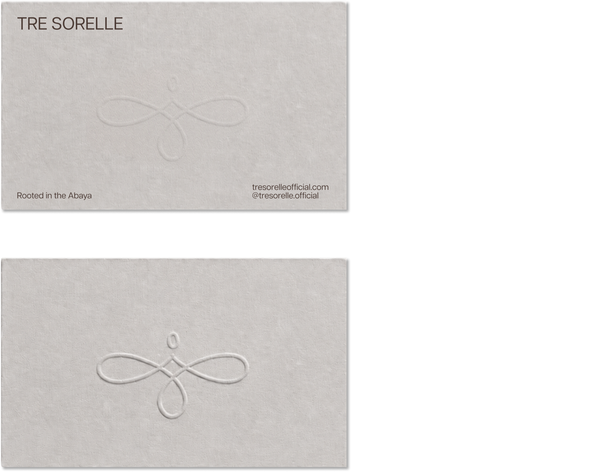
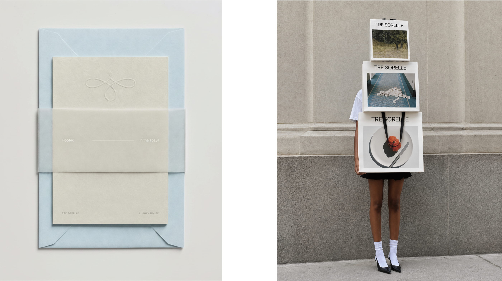
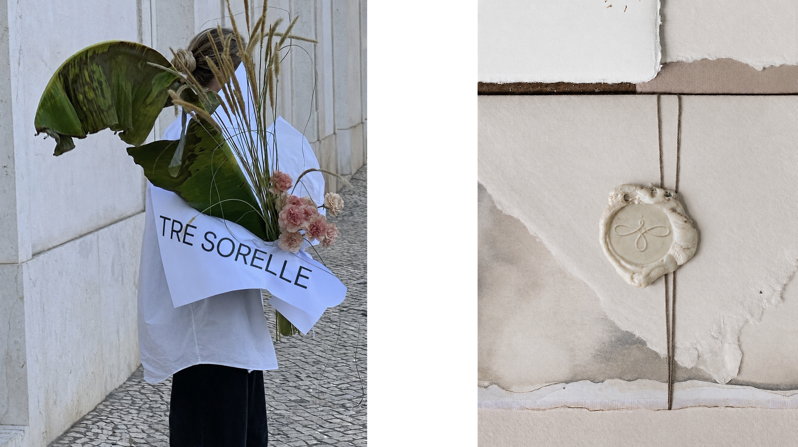
02
Creé el nombre de la primera colección y de cada prenda, y dirigí el photoshoot junto a la fotógrafa. La campaña debía sentirse arraigada en la abaya, Riyadh y Arabia Saudita, pero hablar en inglés y proyectarse como una marca worldwide. Frutas, verduras y gestos escultóricos aportaron frescura y una identidad propia frente a los códigos tradicionales de la competencia.
PHOTOSHOOT GUIDELINES / CREATIVE DIRECTION
Warm
Composed
Natural
Soft
Minimal
Rooted
Feminine
Intentional
Quiet
Editorial
Refined
Calm
Elegant
Tactile
Emotionally refined
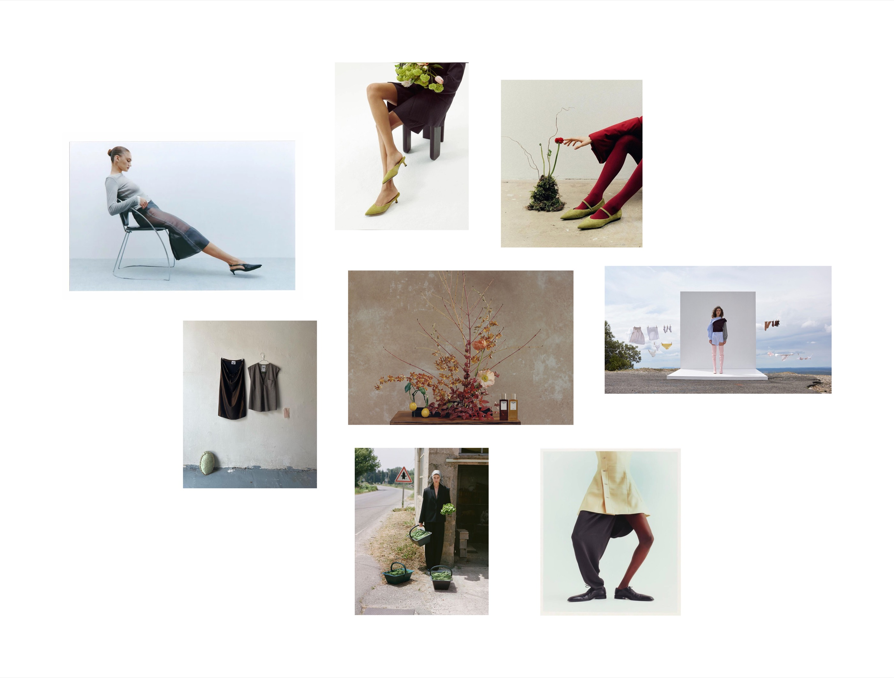
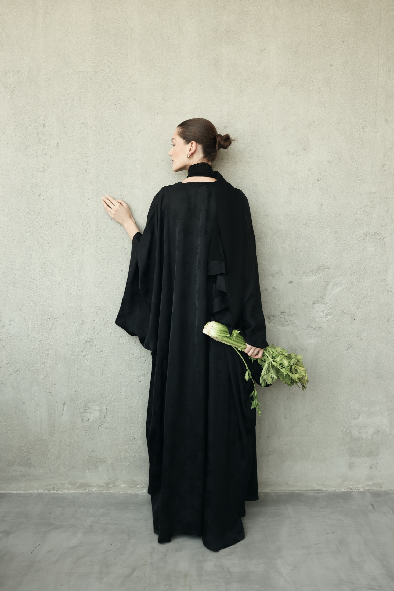
Rooted in the abaya. Made in Riyadh. Created to move from a local origin toward a worldwide fashion house.
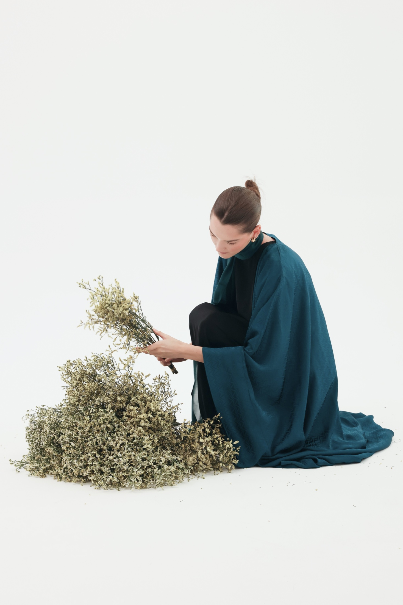
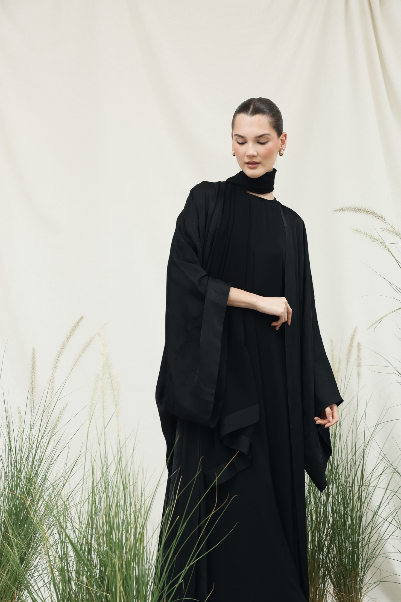
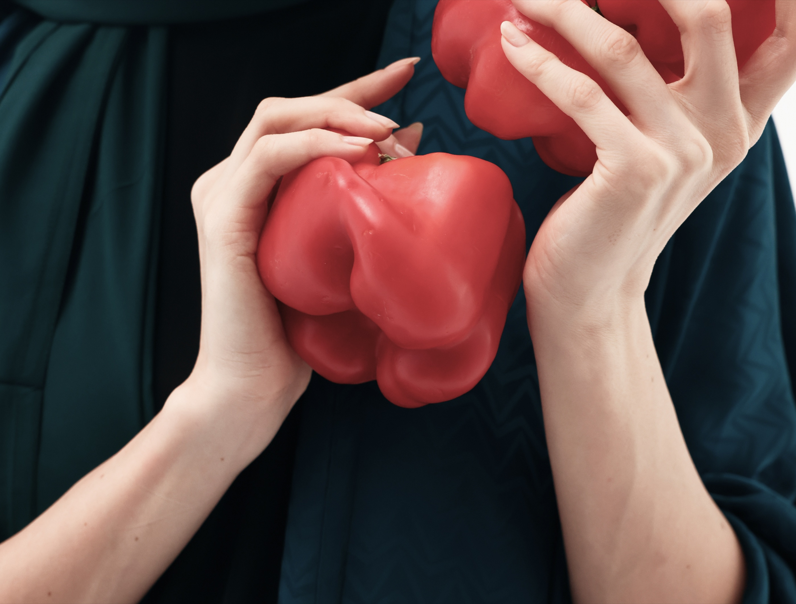
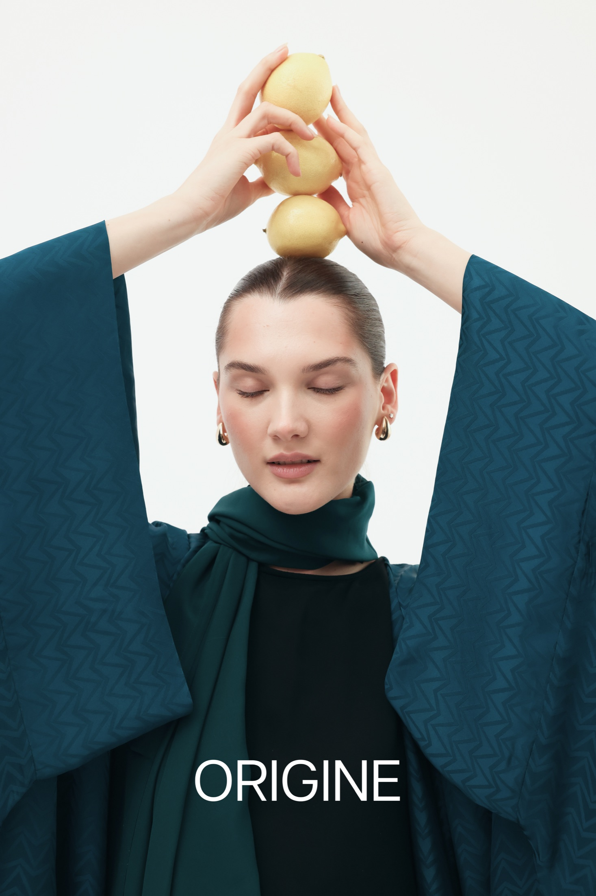
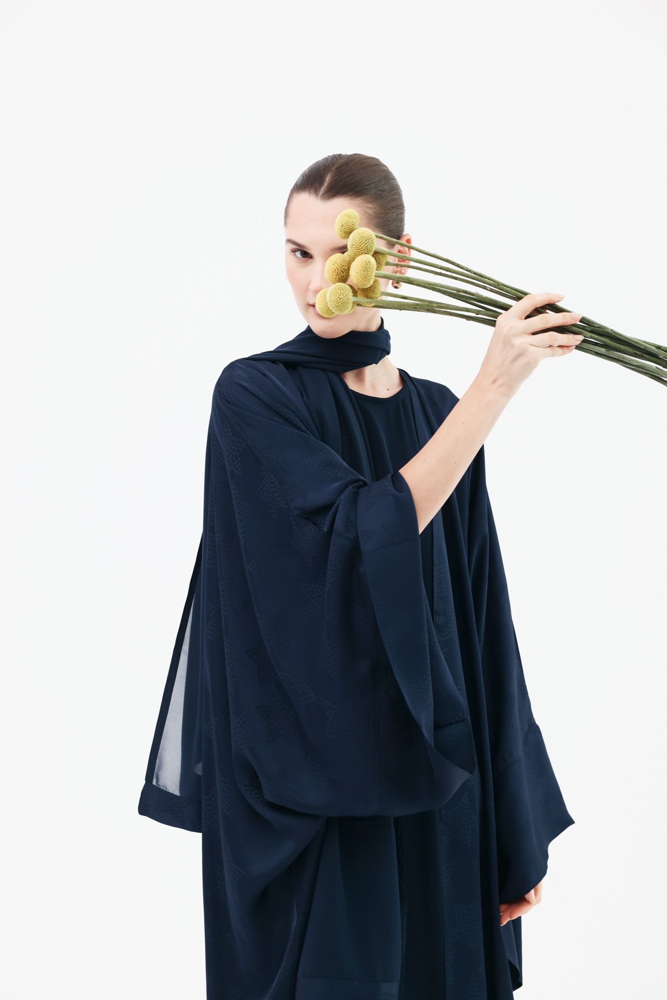
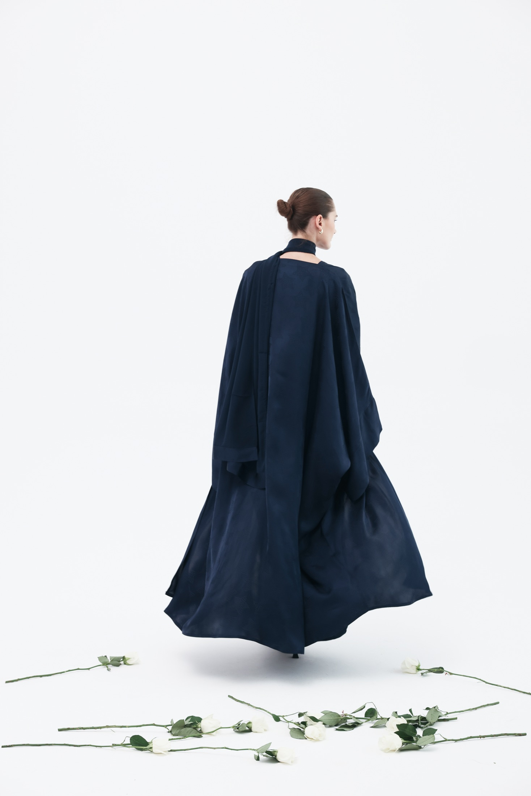
04
Resultados del período de lanzamiento, del 20 de julio al 7 de agosto de 2026. Además de alcance, la campaña generó interés de creadores, reposts y consultas comerciales tempranas.
Dirección creativa integral, identidad de marca, diseño gráfico, campaña y social media management: Elisa Cipriani.
Fundadoras de Tre Sorelle: Razan ALDuhaih y Ghadi Abdullah.
RIYADH / BUENOS AIRES
2026